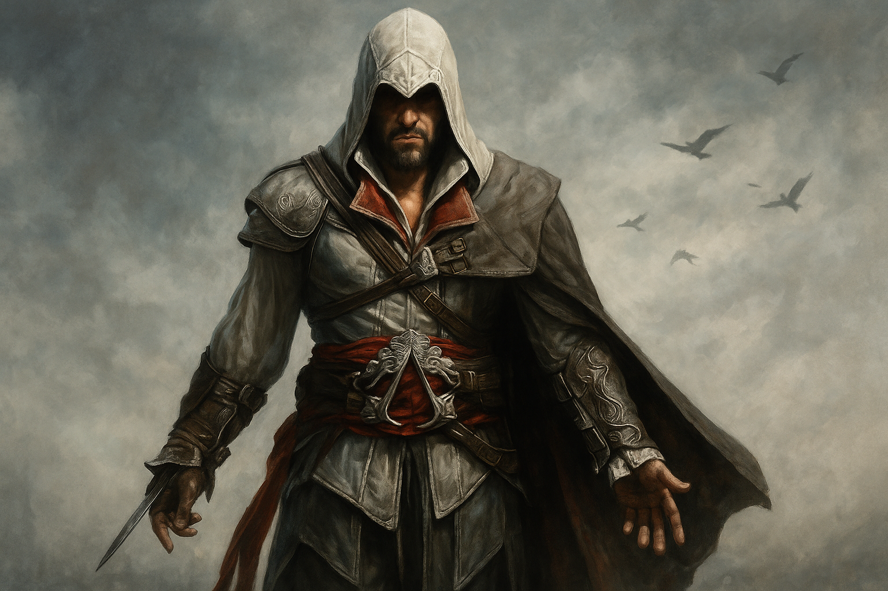
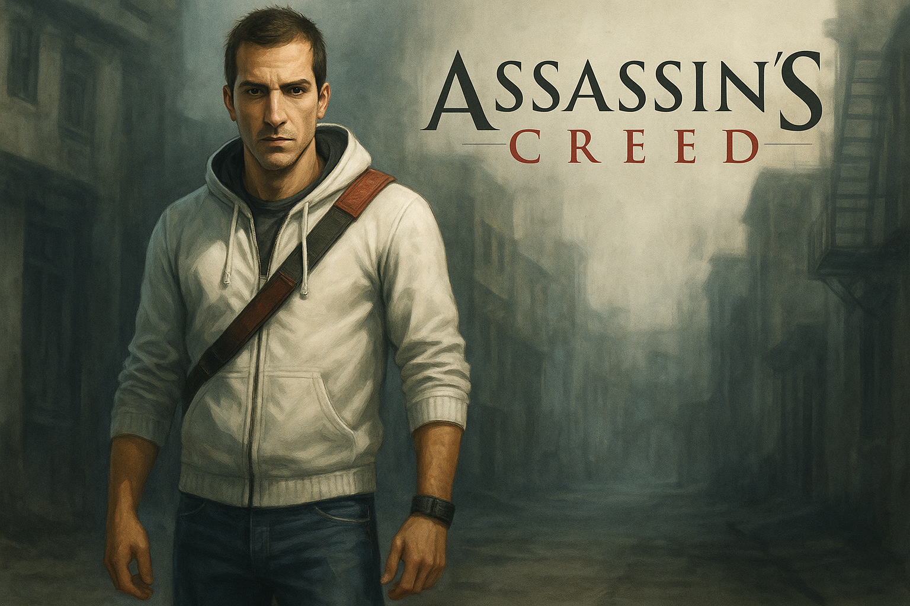
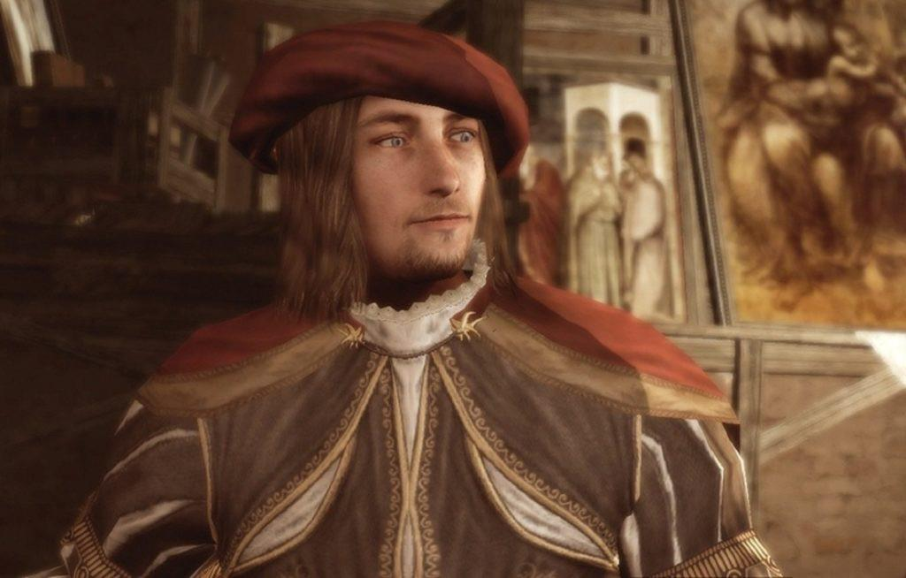

Release Date
November 17, 2009
Platforms
PC, Xbox 360, PS3, Mac
Setting
Renaissance Italy
Era
1476-1499 AD
The Rise of Ezio
Enter the Italian Renaissance as Ezio Auditore da Firenze, a young nobleman turned Assassin after tragedy strikes his family. Assassin's Creed II refined every aspect of its predecessor, offering a deeper story, new gameplay mechanics, and memorable cities like Florence and Venice. It marked the beginning of one of gaming’s most iconic heroes.
Core Features
Weapon Variety
From dual hidden blades to smoke bombs, new tools expand your strategy.
Renaissance Art & Design
Explore beautifully recreated cities like Florence, Venice, and Tuscany.
Cryptic Truths
Uncover glyph puzzles and secret messages left behind by ancient Assassins.
Notable Characters

Ezio Auditore

Desmond Miles

Leonardo da Vinci
Gameplay Mechanics
Economic System
Invest in Monteriggioni, your family's villa. Renovate shops, upgrade defenses, and collect art to increase your income and unlock new equipment.
Leonardo's Inventions
Collaborate with Leonardo da Vinci to decode Codex pages and unlock powerful weapons like the hidden gun, poison blade, and flying machine.
Game Gallery


Legacy & Impact
Assassin's Creed II is widely regarded as one of the greatest games of all time. It perfected the formula established by its predecessor and introduced Ezio Auditore, who became the face of the franchise. The game's emotional storytelling, stunning Renaissance setting, and refined gameplay mechanics set a new standard for the series.
Join the Renaissance
Discover secrets, master your skills, and become the legend of Florence and Venice.
Play Now